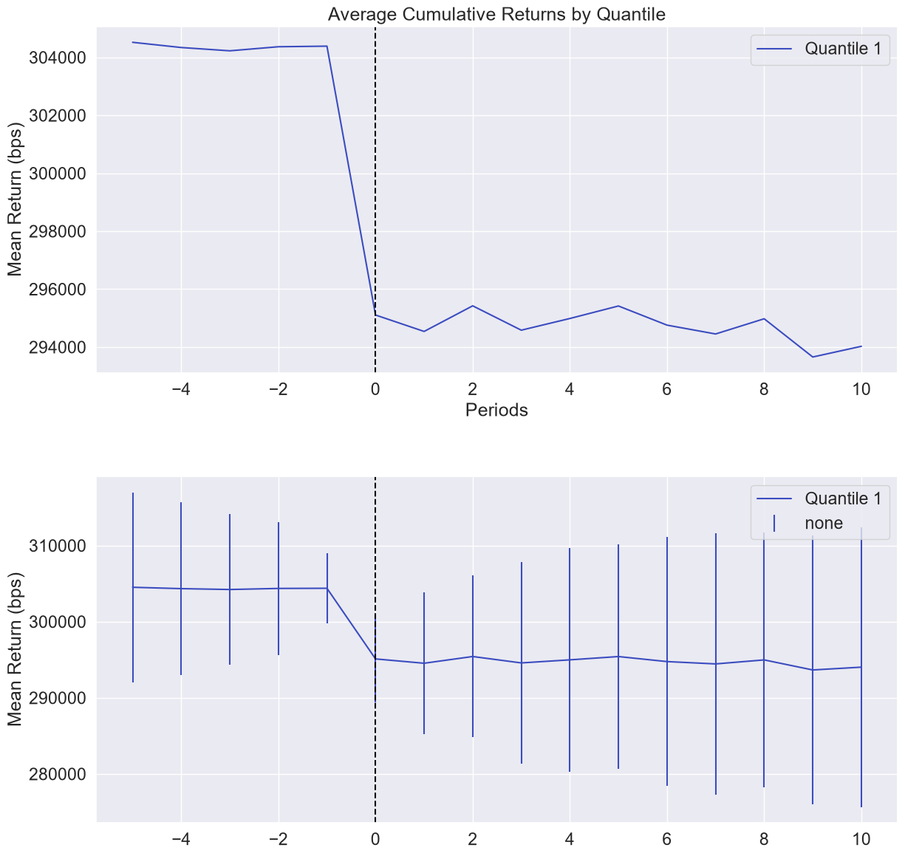
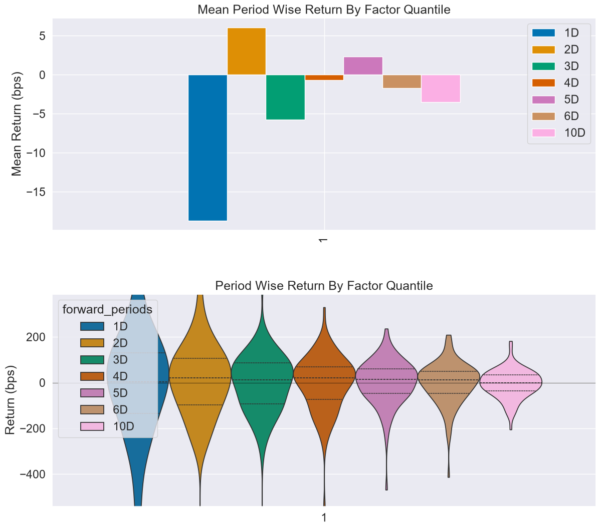
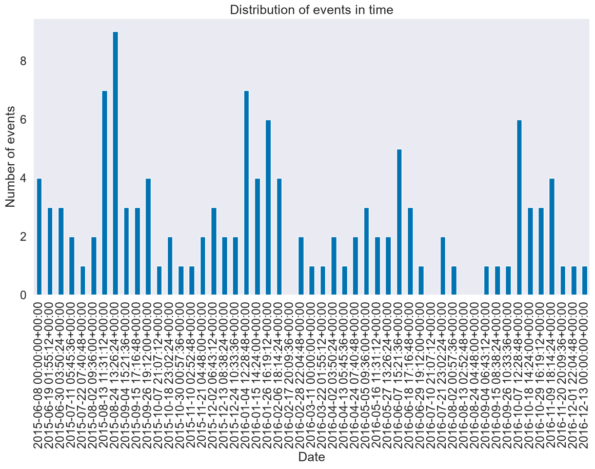

Event Study#
While Alphalens is a tool designed to evaluate a cross-sectional signal which can be used to rank many securities each day, we can still make use of Alphalens returns analysis functions, a subset of Alphalens, to create a meaningful event study.
An event study is a statistical method to assess the impact of a particular event on the value of a stock. In this example we will evalute what happens to stocks whose price fall below 30$
Imports & Settings#
[1]:
import warnings
warnings.filterwarnings('ignore')
[2]:
import alphalens
import pandas as pd
[3]:
%matplotlib inline
Load Data#
Below is a simple mapping of tickers to sectors for a universe of 500 large cap stocks.
[4]:
tickers = ['ACN', 'ATVI', 'ADBE', 'AMD', 'AKAM', 'ADS', 'GOOGL', 'GOOG', 'APH', 'ADI', 'ANSS', 'AAPL',
'AVGO', 'CA', 'CDNS', 'CSCO', 'CTXS', 'CTSH', 'GLW', 'CSRA', 'DXC', 'EBAY', 'EA', 'FFIV', 'FB',
'FLIR', 'IT', 'GPN', 'HRS', 'HPE', 'HPQ', 'INTC', 'IBM', 'INTU', 'JNPR', 'KLAC', 'LRCX', 'MA', 'MCHP',
'MSFT', 'MSI', 'NTAP', 'NFLX', 'NVDA', 'ORCL', 'PAYX', 'PYPL', 'QRVO', 'QCOM', 'RHT', 'CRM', 'STX',
'AMG', 'AFL', 'ALL', 'AXP', 'AIG', 'AMP', 'AON', 'AJG', 'AIZ', 'BAC', 'BK', 'BBT', 'BRK.B', 'BLK', 'HRB',
'BHF', 'COF', 'CBOE', 'SCHW', 'CB', 'CINF', 'C', 'CFG', 'CME', 'CMA', 'DFS', 'ETFC', 'RE', 'FITB', 'BEN',
'GS', 'HIG', 'HBAN', 'ICE', 'IVZ', 'JPM', 'KEY', 'LUK', 'LNC', 'L', 'MTB', 'MMC', 'MET', 'MCO', 'MS',
'NDAQ', 'NAVI', 'NTRS', 'PBCT', 'PNC', 'PFG', 'PGR', 'PRU', 'RJF', 'RF', 'SPGI', 'STT', 'STI', 'SYF', 'TROW',
'ABT', 'ABBV', 'AET', 'A', 'ALXN', 'ALGN', 'AGN', 'ABC', 'AMGN', 'ANTM', 'BCR', 'BAX', 'BDX', 'BIIB', 'BSX',
'BMY', 'CAH', 'CELG', 'CNC', 'CERN', 'CI', 'COO', 'DHR', 'DVA', 'XRAY', 'EW', 'EVHC', 'ESRX', 'GILD', 'HCA',
'HSIC', 'HOLX', 'HUM', 'IDXX', 'ILMN', 'INCY', 'ISRG', 'IQV', 'JNJ', 'LH', 'LLY', 'MCK', 'MDT', 'MRK', 'MTD',
'MYL', 'PDCO', 'PKI', 'PRGO', 'PFE', 'DGX', 'REGN', 'RMD', 'SYK', 'TMO', 'UNH', 'UHS', 'VAR', 'VRTX', 'WAT',
'MMM', 'AYI', 'ALK', 'ALLE', 'AAL', 'AME', 'AOS', 'ARNC', 'BA', 'CHRW', 'CAT', 'CTAS', 'CSX', 'CMI', 'DE',
'DAL', 'DOV', 'ETN', 'EMR', 'EFX', 'EXPD', 'FAST', 'FDX', 'FLS', 'FLR', 'FTV', 'FBHS', 'GD', 'GE', 'GWW',
'HON', 'INFO', 'ITW', 'IR', 'JEC', 'JBHT', 'JCI', 'KSU', 'LLL', 'LMT', 'MAS', 'NLSN', 'NSC', 'NOC', 'PCAR',
'PH', 'PNR', 'PWR', 'RTN', 'RSG', 'RHI', 'ROK', 'COL', 'ROP', 'LUV', 'SRCL', 'TXT', 'TDG', 'UNP', 'UAL',
'AES', 'LNT', 'AEE', 'AEP', 'AWK', 'CNP', 'CMS', 'ED', 'D', 'DTE', 'DUK', 'EIX', 'ETR', 'ES', 'EXC']
YFinance Download#
[5]:
import yfinance as yf
df = yf.download(tickers, start='2015-06-01', end='2017-01-01')
[**** 9% ] 22 of 247 completedHTTP Error 404: {"quoteSummary":{"result":null,"error":{"code":"Not Found","description":"Quote not found for symbol: CA"}}}
[***** 11% ] 28 of 247 completed$IR: possibly delisted; no price data found (1d 2015-06-01 -> 2017-01-01) (Yahoo error = "Data doesn't exist for startDate = 1433131200, endDate = 1483246800")
[****** 12% ] 29 of 247 completed$CA: possibly delisted; no timezone found
[******* 15% ] 38 of 247 completed$ANSS: possibly delisted; no timezone found
[******** 16% ] 39 of 247 completed$MMC: possibly delisted; no timezone found
[******** 16% ] 40 of 247 completedHTTP Error 404: {"quoteSummary":{"result":null,"error":{"code":"Not Found","description":"Quote not found for symbol: LLL"}}}
[********* 18% ] 45 of 247 completed$ATVI: possibly delisted; no timezone found
[********* 18% ] 45 of 247 completed$STI: possibly delisted; no price data found (1d 2015-06-01 -> 2017-01-01) (Yahoo error = "Data doesn't exist for startDate = 1433131200, endDate = 1483246800")
[********* 19% ] 48 of 247 completed$LLL: possibly delisted; no timezone found
[********** 20% ] 49 of 247 completed$LUK: possibly delisted; no price data found (1d 2015-06-01 -> 2017-01-01)
[********** 21% ] 53 of 247 completed$PDCO: possibly delisted; no timezone found
$BRK.B: possibly delisted; no timezone found
[*********** 23% ] 58 of 247 completed$FLIR: possibly delisted; no timezone found
[************ 24% ] 59 of 247 completed$PBCT: possibly delisted; no timezone found
[************ 26% ] 64 of 247 completed$DFS: possibly delisted; no timezone found
[************ 26% ] 65 of 247 completed$RE: possibly delisted; no timezone found
[************** 29% ] 71 of 247 completed$HRS: possibly delisted; no timezone found
[**************** 34% ] 84 of 247 completed$CERN: possibly delisted; no timezone found
[***************** 35% ] 86 of 247 completed$CMA: possibly delisted; no timezone found
[********************* 43% ] 106 of 247 completed$KSU: possibly delisted; no timezone found
[**********************45% ] 110 of 247 completed$RTN: possibly delisted; no timezone found
[**********************45% ] 111 of 247 completed$ALXN: possibly delisted; no timezone found
[**********************46% ] 113 of 247 completed$FBHS: possibly delisted; no timezone found
[**********************49% ] 122 of 247 completed$ABC: possibly delisted; no timezone found
[**********************51% ] 126 of 247 completed$JNPR: possibly delisted; no timezone found
[**********************51% ] 127 of 247 completed$BK: possibly delisted; no timezone found
[**********************54%* ] 134 of 247 completed$AGN: possibly delisted; no timezone found
[**********************56%** ] 139 of 247 completed$BCR: possibly delisted; no price data found (1d 2015-06-01 -> 2017-01-01)
[**********************60%**** ] 148 of 247 completed$RHT: possibly delisted; no timezone found
[**********************63%***** ] 155 of 247 completed$FB: possibly delisted; no price data found (1d 2015-06-01 -> 2017-01-01) (Yahoo error = "Data doesn't exist for startDate = 1433131200, endDate = 1483246800")
[**********************66%******* ] 163 of 247 completed$ETFC: possibly delisted; no timezone found
[**********************66%******* ] 164 of 247 completed$CELG: possibly delisted; no timezone found
[**********************69%******** ] 170 of 247 completed$ADS: possibly delisted; no timezone found
[**********************80%************* ] 198 of 247 completed$INFO: possibly delisted; no price data found (1d 2015-06-01 -> 2017-01-01) (Yahoo error = "Data doesn't exist for startDate = 1433131200, endDate = 1483246800")
[**********************85%**************** ] 211 of 247 completed$VAR: possibly delisted; no timezone found
[**********************90%****************** ] 222 of 247 completed$NLSN: possibly delisted; no timezone found
[**********************92%******************* ] 228 of 247 completed$PKI: possibly delisted; no timezone found
[**********************93%******************** ] 229 of 247 completed$HOLX: possibly delisted; no timezone found
[**********************94%******************** ] 232 of 247 completed$ANTM: possibly delisted; no timezone found
[**********************94%******************** ] 233 of 247 completed$CTXS: possibly delisted; no timezone found
[**********************95%********************* ] 234 of 247 completed$MYL: possibly delisted; no timezone found
[**********************95%********************* ] 234 of 247 completed$JEC: possibly delisted; no timezone found
[**********************96%********************* ] 236 of 247 completed$BHF: possibly delisted; no price data found (1d 2015-06-01 -> 2017-01-01) (Yahoo error = "Data doesn't exist for startDate = 1433131200, endDate = 1483246800")
$ARNC: possibly delisted; no timezone found
[**********************98%********************** ] 243 of 247 completed$SRCL: possibly delisted; no timezone found
[*********************100%***********************] 247 of 247 completed
43 Failed downloads:
['IR', 'STI', 'FB', 'INFO', 'BHF']: possibly delisted; no price data found (1d 2015-06-01 -> 2017-01-01) (Yahoo error = "Data doesn't exist for startDate = 1433131200, endDate = 1483246800")
['CA', 'ANSS', 'MMC', 'ATVI', 'LLL', 'PDCO', 'BRK.B', 'FLIR', 'PBCT', 'DFS', 'RE', 'HRS', 'CERN', 'CMA', 'KSU', 'RTN', 'ALXN', 'FBHS', 'ABC', 'JNPR', 'BK', 'AGN', 'RHT', 'ETFC', 'CELG', 'ADS', 'VAR', 'NLSN', 'PKI', 'HOLX', 'ANTM', 'CTXS', 'MYL', 'JEC', 'ARNC', 'SRCL']: possibly delisted; no timezone found
['LUK', 'BCR']: possibly delisted; no price data found (1d 2015-06-01 -> 2017-01-01)
Data Formatting#
[6]:
df = df.stack()
df.index.names = ['date', 'asset']
df = df.tz_localize('UTC', level='date')
[7]:
df.info()
<class 'pandas.core.frame.DataFrame'>
MultiIndex: 81483 entries, (Timestamp('2015-06-01 00:00:00+0000', tz='UTC'), 'A') to (Timestamp('2016-12-30 00:00:00+0000', tz='UTC'), 'XRAY')
Data columns (total 6 columns):
# Column Non-Null Count Dtype
--- ------ -------------- -----
0 Adj Close 0 non-null float64
1 Close 81483 non-null float64
2 High 81483 non-null float64
3 Low 81483 non-null float64
4 Open 81483 non-null float64
5 Volume 81483 non-null float64
dtypes: float64(6)
memory usage: 4.1+ MB
Factor Computation#
Now it’s time to build the events DataFrame, the input we will pass to Alphalens.
Alphalens calculates statistics for those dates where the input DataFrame has values (not NaN). So to compute the performace analysis on specific dates and securities (like an event study) then we have to make sure the input DataFrame contains valid values only on those date/security combinations where the event happens. All the other values in the DataFrame must be NaN or not present.
Also, make sure the event values are positive (it doesn’t matter the value but they must be positive) if you intend to go long on the events and use negative values if you intent to go short. This impacts the cumulative returns plots.
Let’s create the event DataFrame where we “mark” (any value) each day a security price fall below 30$.
[8]:
today_price = df.loc[:, 'Open'].unstack('asset')
yesterday_price = today_price.shift(1)
events = today_price[(today_price < 30.0) & (yesterday_price >= 30)]
events = events.stack()
events = events.astype(float)
events
[8]:
date asset
2015-06-08 00:00:00+00:00 BAX 29.887307
BEN 29.581980
2015-06-12 00:00:00+00:00 BEN 29.873572
2015-06-17 00:00:00+00:00 LUV 29.709388
2015-06-29 00:00:00+00:00 BEN 29.730130
...
2016-11-18 00:00:00+00:00 NTAP 28.935897
2016-11-21 00:00:00+00:00 EW 29.683332
2016-12-05 00:00:00+00:00 CMS 29.992486
2016-12-13 00:00:00+00:00 EW 29.476667
2016-12-29 00:00:00+00:00 INTC 29.806305
Length: 127, dtype: float64
The pricing data passed to alphalens should contain the entry price for the assets so it must reflect the next available price after an event was observed at a given timestamp. Those prices must not be used in the calculation of the events for that time. Always double check to ensure you are not introducing lookahead bias to your study.
The pricing data must also contain the exit price for the assets, for period 1 the price at the next timestamp will be used, for period 2 the price after 2 timestats will be used and so on.
While Alphalens is time frequency agnostic, in our example we build ‘pricing’ DataFrame so that for each event timestamp it contains the assets open price for the next day afer the event is detected, this price will be used as the assets entry price. Also, we are not adding additional prices so the assets exit price will be the following days open prices (how many days depends on ‘periods’ argument).
[9]:
pricing = df.loc[:, 'Open'].iloc[1:].unstack('asset')
[10]:
pricing.info()
<class 'pandas.core.frame.DataFrame'>
DatetimeIndex: 402 entries, 2015-06-01 00:00:00+00:00 to 2016-12-30 00:00:00+00:00
Columns: 204 entries, AAL to FTV
dtypes: float64(204)
memory usage: 643.8 KB
Run Event Study#
Configuration#
Before running Alphalens beware of some important options:
[11]:
# we don't want any filtering to be done
filter_zscore = None
[12]:
# We want to have only one bin/quantile. So we can either use quantiles=1 or bins=1
quantiles = None
bins = 1
# Beware that in pandas versions below 0.20.0 there were few bugs in panda.qcut and pandas.cut
# that resulted in ValueError exception to be thrown when identical values were present in the
# dataframe and 1 quantile/bin was selected.
# As a workaroung use the bins custom range option that include all your values. E.g.
quantiles = None
bins = [-1000000, 1000000]
[13]:
# You don't have to directly set 'long_short' option when running alphalens.tears.create_event_study_tear_sheet
# But in case you are making use of other Alphalens functions make sure to set 'long_short=False'
# if you set 'long_short=True' Alphalens will perform forward return demeaning and that makes sense only
# in a dollar neutral portfolio. With an event style signal you cannot usually create a dollar neutral
# long/short portfolio
long_short = False
Get Alphalens Input#
[14]:
factor_data = alphalens.utils.get_clean_factor_and_forward_returns(events,
pricing,
quantiles=None,
bins=1,
periods=(
1, 2, 3, 4, 5, 6, 10),
filter_zscore=None)
Dropped 0.8% entries from factor data: 0.8% in forward returns computation and 0.0% in binning phase (set max_loss=0 to see potentially suppressed Exceptions).
max_loss is 35.0%, not exceeded: OK!
Run Event Tearsheet#
[15]:
alphalens.tears.create_event_study_tear_sheet(
factor_data, pricing, avgretplot=(5, 10))
Quantiles Statistics
| min | max | mean | std | count | count % | |
|---|---|---|---|---|---|---|
| factor_quantile | ||||||
| 1 | 26.549999 | 29.993163 | 29.503415 | 0.558334 | 126 | 100.0 |
<Figure size 640x480 with 0 Axes>

<Figure size 640x480 with 0 Axes>


Short Signal Analysis#
If we wanted to analyze the performance of short signal, we only had to switch from positive to negative event values
[16]:
events = -events
[17]:
factor_data = alphalens.utils.get_clean_factor_and_forward_returns(events,
pricing,
quantiles=None,
bins=1,
periods=(
1, 2, 3, 4, 5, 6, 10),
filter_zscore=None)
Dropped 0.8% entries from factor data: 0.8% in forward returns computation and 0.0% in binning phase (set max_loss=0 to see potentially suppressed Exceptions).
max_loss is 35.0%, not exceeded: OK!
[18]:
alphalens.tears.create_event_study_tear_sheet(
factor_data, pricing, avgretplot=(5, 10))
Quantiles Statistics
| min | max | mean | std | count | count % | |
|---|---|---|---|---|---|---|
| factor_quantile | ||||||
| 1 | -29.993163 | -26.549999 | -29.503415 | 0.558334 | 126 | 100.0 |
<Figure size 640x480 with 0 Axes>

<Figure size 640x480 with 0 Axes>


[ ]: